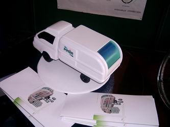

|
Graduation
Show:
Bu
sergi üniversitelerin endüstriyel tasarým bölümünü dereceyle
bitiren öðrencilerin gerçekleþtirdikleri projelerin Istanbul
Design Week'05 kapsamýnda sergilemesi saðlamak ve tasarýma
önem veren üniversiteleri ortak bir konsept doðrultusunda
buluþturmayý hedeflemiþtir. Sergide, ÝTÜ, Marmara Üniversitesi,
ODTÜ, Yeditepe Üniversitesi, YTÜ, Anadolu Üniversitesi tasarým
bölümlerini birincilik, ikincilik ve üçüncülükle bitiren öðrencilerin
birbirinden ilginç ve baþarýlý birçok proje bulunmaktadýr.
Sergide öðrencilerin mezuniyet projeleri, prototip ve maketleriyle
birlikte yer alýyor.
|
|
|
|
Damla
Bee-Sea-Klet
ÝTÜ Endüstri Ürünleri Tasarýmý ve Gemi Ýnþa Müh. Böl.'leri
ortak tasarým ve yapýmý damla þeklinde orijinal bir
deniz bisikleti. BU
bisiklete ait çalýþýr vaziyette bir model de Galata
Köprüsü'ne baðlý vaziyette sergileniyor. |
|
|
|
Yukarýda,
Marmara Üniv. G.S.F. Endüstri Ürünleri Tasarýmý Böl.
öðrencilerinin içme suyu damacanalarýnýn taþýnmasý
için tasarladýðý özel kamyon kasasý ve taþýma aparatlarýna
ait dereceye giren projelerden ikisi görülmektedir.
Solda sergilenen Yaprak Büyükteoman'a ait eser 1.
seçilmiþtir.
| Yaprak
Büyükteoman ile yapýlan bir röportaj ve detaylý
resimler TurkCADCAM.net
Dergisi ilk sayýsýnda sayýsýnda yayýnlanacaktýr. |
|
|
 |
|
|
Birinci
seçilen projeye ait ölçekli bir model. |
Amortisörlü
bir kýzak. |
Bisan sponsorluðunda, "DAIMA, the basketbool whell chair"
ismiyle Fiziksel engellilerin basketbol oynayabilmesi Erman
Akyol tarafýndan tasarlanmýþ bir tekerlekli sandalye. Bu sandalyeye
ait 1:1 ölçekli bir model de sergileniyordu.
Nar
Sehpa:
|
Nar
Sehpa Tasarým: Ömer Ünal,
u:b studio Ölçüler: 120x120x40
|
"Nar",
Sehpa ve kitaplýðýn fonksiyonlarýný bir araya getirerek pratik
bir kullaným biçimi sunmaktadýr.
Kitaplar,
yan yana sýralanmýþ ince metal levhalara geçirilerek sýrtlarýndan
dikey olarak taþýnýr. Bu levhalar bir kitaplýk kadar çok kitabý
taþýr ve ayný zamanda kitap ayracý görevi görür.
Ýskeletin
ve kitaplarýn üzerinde rahatlýkla kayabilen tepsiler kitaplarý
tozdan korur ve "Nar'a" bir sehpa olarak kullaným
kazandýrmýþ olur...
u:b
Studio Hakkýnda: (www.unalmimarlik.com)
u:b studio 2001 yýlýnda Ömer Ünal ve Alper Böler tarafýndan
kurulmuþtur. Üretici firmalara geniþ kapsamlý tasarým desteði
veren bir firmadýr.
Kaynak:
dexigner.com
Ödül
Töreni:
IDW
2005 Yýlýn Tasarýmý Ödülü ve ETMK ADesign Fair 2005 Yýlýn
Genç Tasarýmcýsý Ödülü, 16 Eylül 2005 Cuma akþamý düzenlenen
ödül töreni ile sahiplerini buldu.
Soldan saða 3. sýrada Zafer Uluçay, 4.
sýrada ise Ömer Ünal görülmektedir. Kaynak: dexigner.com
IDW 2005 Yýlýn Tasarýmý Ödülü, Nar Kitaplýk sehpasý
ile Ömer Ünal'a verildi. IDW 2005 Yýlýn Tasarým ödülü
için deðerlendirme ölçütleri þunlardý: Tasarým konseptinde
özgürlük ve yenilikçilik, iþlevsel ve estetik uyum, kullanýcý
açýsýndan tasarým çözümünün kalitesi, kendi alanýnda çaðdaþ
Türk tasarýmýna yaratýcý bir çözüm veya boyut getirmesi.
ETMK
ADesign Fair 2005 Yýlýn Genç Tasarýmcýsý Ödülü'nü ise
ZuluDesign'dan Zafer Uluçay aldý. Zafer Uluçay bu ödüle,
tasarým sürecinin baþýndan sonuna izlediði çalýþma yöntemiyle
tüm tasarýmcý adaylarýna örnek teþkil etmesine ek olarak,
çalýþma verimliliði, azmi ve iþ kalitesinden dolayý layýk
görüldü.
Ödül kazanan tasarýmcýlar 2006 Milano Design Week için ücretsiz
gidiþ dönüþ uçak bileti ve konaklama hakký kazandýlar.
Yönergesi
ETMK tarafýndan hazýrlanan yarýþmanýn seçici kurulu; Yýlmaz
Zenger, Aldo Cibic, Ýnci Mutlu, Alpay Er, Koray Malhan, Tanju
Özelgin, Özlem Yalým, Naz Evyapan ve Ali Bakova'dan oluþuyordu.
Daha
fazla bilgi için:
Not:
ADesign
2005'e ait daha fazla bilgi, röportaj ve yüksek çözünürlüðe
sahip fotoðraflarý TurkCADCAM.net
Dergisi'nin ilk sayýsýnda bulabilirsiniz. |
|